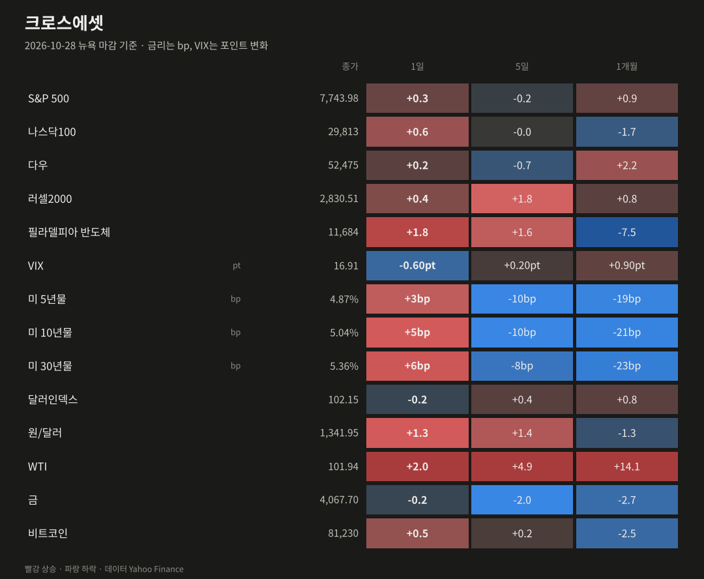
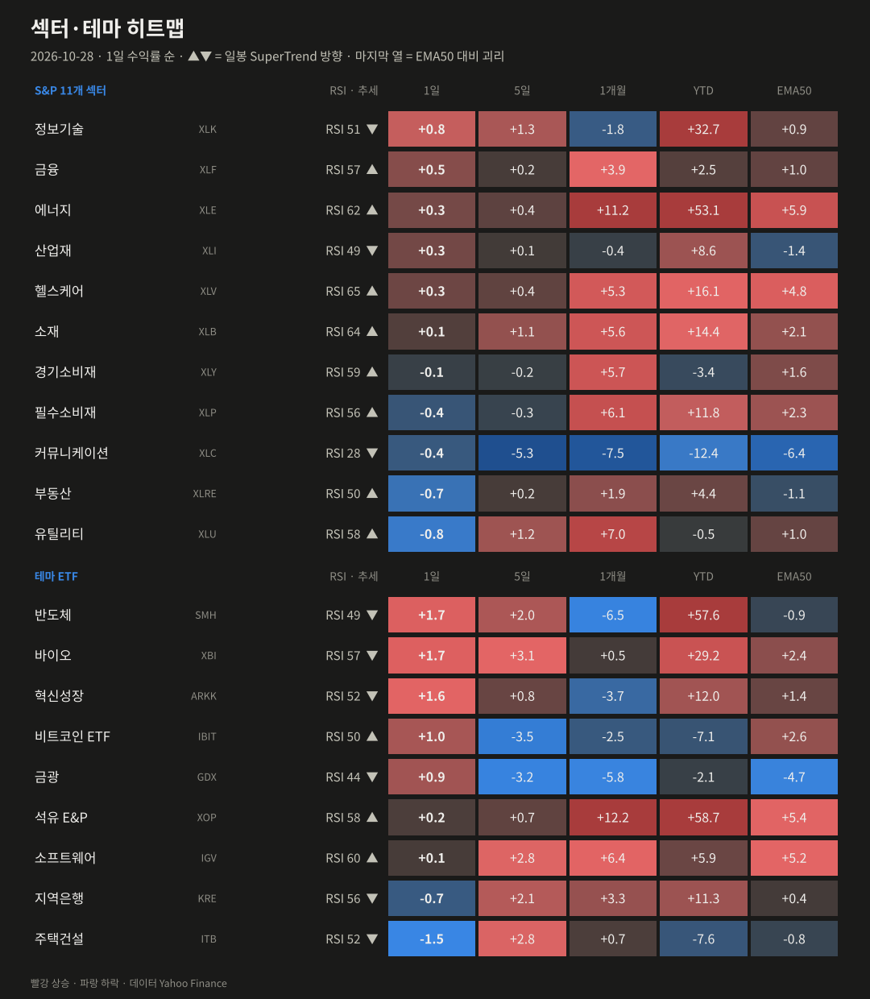
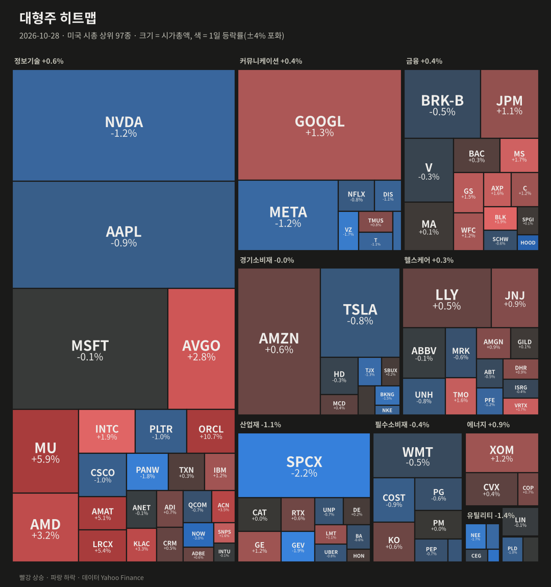
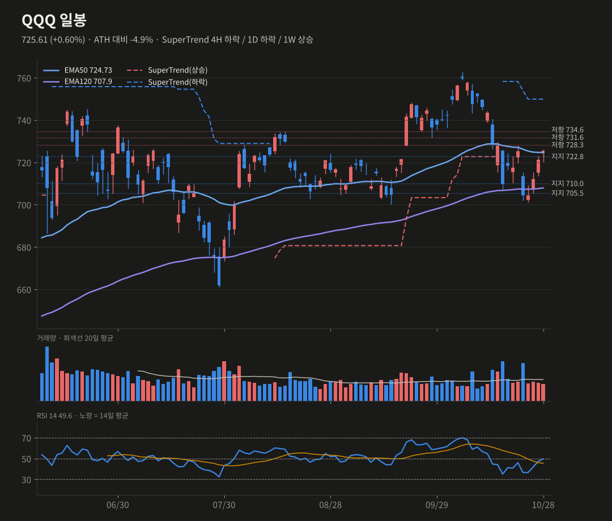
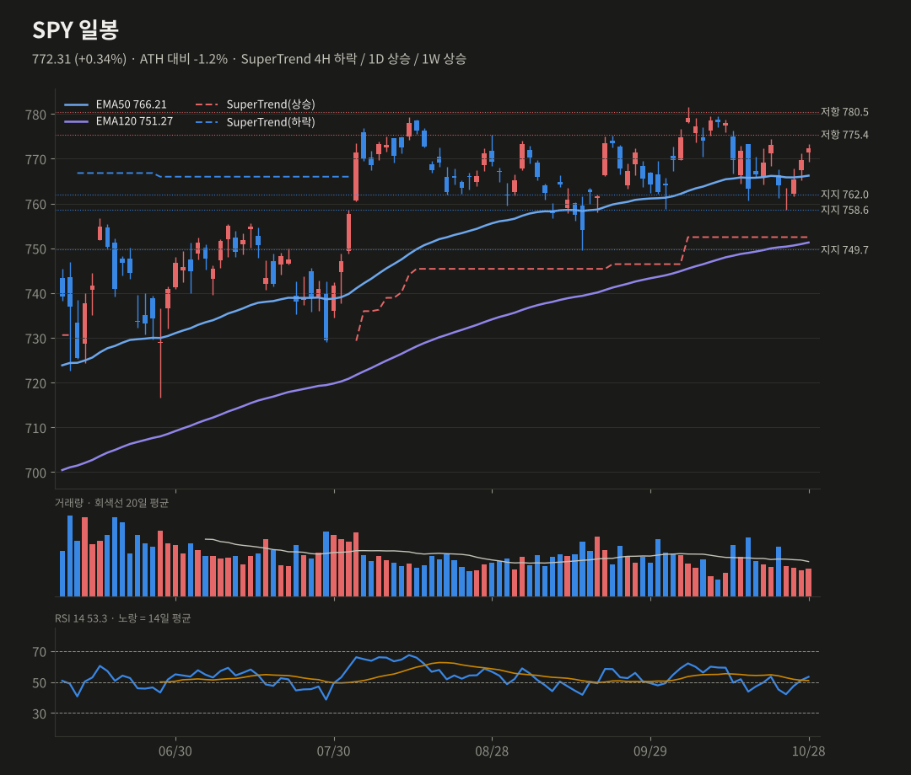
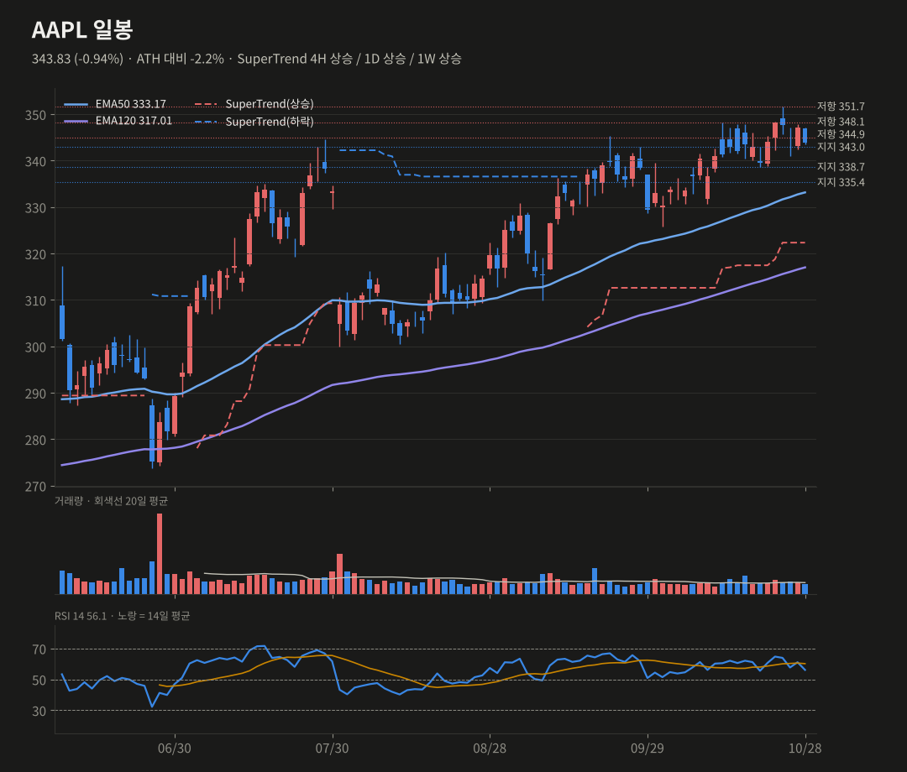

미증시 마감 브리핑
10/28(수) 뉴욕 마감 기준 · 생성 2026-10-29 07:40 KST
Fed는 동결했지만 매파적이었고, 반도체 장비주와 오라클이 지수를 받쳤어요. 장 마감 후 알파벳 −10%가 나스닥 선물을 끌어내렸어요.
S&P 5007,743.98+0.28%
나스닥10029,813+0.55%
다우52,475+0.19%
러셀20002,830.51+0.41%
반도체(SOX)11,684+1.75%
VIX16.91-0.60pt
미 10년물5.04%+5.20bp
원/달러1,341.95+1.30%
요약
- Fed: 3.75~4.00% 동결, 인상 쪽 반대 2표로 매파적이었어요. 10년물은 5.04%로 올랐어요.
- 지수: SOX +1.75%와 ORCL +10.7%가 끌어올렸지만 동일가중은 −0.04%로 폭이 좁았어요.
- 시간외: GOOGL 약 −10%, MSFT +3~4%로 엇갈렸고, QQQ는 −1.2%로 정규장 상승분을 반납했어요.
- 기술적: QQQ는 724.7 회복 여부, SPY는 766.2 지지, AAPL은 344.9 회복과 11/2 실적이 관건이에요.
종합 판단
Fed의 매파적 동결과 10년물 5% 재돌파로 금리 부담이 다시 커졌어요. 그 속에서도 반도체 장비·메모리와 오라클 같은 AI 인프라 쪽으로만 돈이 몰리는 좁은 장이에요. 오늘 밤에는 알파벳 −10%를 MSFT 호실적이 얼마나 상쇄하는지, 그리고 GDP·PCE가 12월 인상 기대를 더 키우는지를 봐야 해요. QQQ는 시간외 기준으로 EMA50(724.7)을 다시 잃어 단기 확률을 낮췄어요.
Fed의 매파적 동결과 10년물 5% 재돌파로 금리 부담이 다시 커졌어요. 그 속에서도 반도체 장비·메모리와 오라클 같은 AI 인프라 쪽으로만 돈이 몰리는 좁은 장이에요. 오늘 밤에는 알파벳 −10%를 MSFT 호실적이 얼마나 상쇄하는지, 그리고 GDP·PCE가 12월 인상 기대를 더 키우는지를 봐야 해요. QQQ는 시간외 기준으로 EMA50(724.7)을 다시 잃어 단기 확률을 낮췄어요.
무엇이 시장을 움직였나
- FOMC: 기준금리를 3.75~4.00%로 동결했어요. 10대 2 표결이었고, 쿡 이사와 해맥 총재는 25bp 인상을 주장하며 반대했어요. 성명은 인플레이션이 "여전히 높다"고 유지했고, 경기 판단은 "강한 속도로 확장"으로 상향했어요. 시장은 12월 인상 가능성을 높게 반영하기 시작했어요.
- 금리: 결정 후 10년물이 5bp 올라 5.04%, 30년물은 5.36%가 됐어요. 그 영향으로 유틸리티(−0.8%)와 부동산(−0.7%)이 가장 약했어요.
- 반도체 장비·메모리 강세: SOX +1.75%였어요. MU +5.9%, LRCX +5.4%, AMAT +5.1%, KLAC +3.3%, AMD +3.2%가 올랐고, NVDA만 −1.2%로 엇갈렸어요. ORCL은 거래량 2.9배와 함께 +10.7% 급등했어요.
- 약세 종목: NOW −3.0%(거래량 2.4배), HOOD −3.3%, GEV −1.9%였어요. 모멘텀 팩터가 저변동보다 1.46%p 강했어요.
- WTI가 +2.0% 올라 101.9달러예요. 에너지는 1개월 +11%로 가장 강한 섹터가 이어지고 있어요.
장 마감 후·시간외
- 알파벳(GOOGL)이 시간외 약 −10%예요(324.9 → 291.9). 매출 1,275.8억 달러로 예상 1,279.7억 달러를 소폭 밑돌았어요. EPS는 2.12달러로 예상 약 3.01달러에 못 미쳤는데, 87억 달러 투자 손실이 반영됐어요. 잉여현금흐름도 약 −91억 달러로 적자 전환했다는 보도가 나왔어요.
- 마이크로소프트(MSFT)는 시간외 +3~4%예요. 매출 922.8억 달러(예상 906.9억 달러), 조정 EPS 4.89달러(예상 4.73달러)였어요. Azure는 +48%(전 분기 42%)였고, capex는 452억 달러로 예상 507억 달러보다 적었어요.
- 시간외 기준 QQQ 716.9(−1.2%), SPY 768.6(−0.5%), AAPL 345.4(+0.4%)예요. 알파벳 비중 때문에 QQQ가 정규장 상승분을 모두 반납했어요.

| 자산 | 종가 | 1일 | 5일 | 1개월 |
|---|---|---|---|---|
| S&P 500 | 7743.98 | +0.28% | -0.17% | +0.95% |
| 나스닥100 | 29813.16 | +0.55% | -0.03% | -1.73% |
| 다우 | 52475.1 | +0.19% | -0.72% | +2.19% |
| 러셀2000 | 2830.51 | +0.41% | +1.78% | +0.80% |
| 필라델피아 반도체 | 11684.0 | +1.75% | +1.55% | -7.48% |
| VIX | 16.91 | -0.60pt | +0.20pt | +0.90pt |
| 미 5년물 | 4.871 | +3.1bp | -10.1bp | -19.2bp |
| 미 10년물 | 5.045 | +5.2bp | -10.1bp | -21.0bp |
| 미 30년물 | 5.361 | +5.6bp | -7.8bp | -23.3bp |
| 달러인덱스 | 102.15 | -0.16% | +0.37% | +0.77% |
| 원/달러 | 1341.95 | +1.30% | +1.36% | -1.30% |
| WTI | 101.94 | +2.04% | +4.93% | +14.05% |
| 금 | 4067.7 | -0.17% | -1.98% | -2.68% |
| 비트코인 | 81230.21 | +0.53% | +0.19% | -2.46% |

| 섹터·테마 | 1일 | 5일 | 1개월 | YTD | RSI | 일봉 추세 |
|---|---|---|---|---|---|---|
| 반도체 SMH | +1.74% | +1.97% | -6.46% | +57.6% | 49 | 하락 |
| 바이오 XBI | +1.72% | +3.10% | +0.45% | +29.2% | 57 | 하락 |
| 혁신성장 ARKK | +1.58% | +0.82% | -3.72% | +12.0% | 52 | 하락 |
| 비트코인 ETF IBIT | +0.96% | -3.55% | -2.51% | -7.1% | 50 | 상승 |
| 금광 GDX | +0.91% | -3.19% | -5.75% | -2.1% | 44 | 하락 |
| 정보기술 XLK | +0.80% | +1.30% | -1.80% | +32.7% | 51 | 하락 |
| 금융 XLF | +0.45% | +0.16% | +3.93% | +2.5% | 57 | 상승 |
| 에너지 XLE | +0.35% | +0.43% | +11.23% | +53.1% | 62 | 상승 |
| 산업재 XLI | +0.34% | +0.11% | -0.38% | +8.6% | 49 | 하락 |
| 헬스케어 XLV | +0.30% | +0.44% | +5.27% | +16.1% | 65 | 상승 |
| 석유 E&P XOP | +0.18% | +0.68% | +12.17% | +58.7% | 58 | 상승 |
| 소재 XLB | +0.15% | +1.05% | +5.62% | +14.4% | 64 | 상승 |
| 소프트웨어 IGV | +0.12% | +2.84% | +6.36% | +5.9% | 60 | 상승 |
| 경기소비재 XLY | -0.10% | -0.17% | +5.66% | -3.4% | 59 | 상승 |
| 필수소비재 XLP | -0.36% | -0.31% | +6.10% | +11.8% | 56 | 상승 |
| 커뮤니케이션 XLC | -0.42% | -5.35% | -7.47% | -12.4% | 28 | 하락 |
| 지역은행 KRE | -0.65% | +2.11% | +3.27% | +11.3% | 56 | 하락 |
| 부동산 XLRE | -0.73% | +0.17% | +1.91% | +4.4% | 50 | 상승 |
| 유틸리티 XLU | -0.84% | +1.17% | +7.00% | -0.5% | 58 | 상승 |
| 주택건설 ITB | -1.51% | +2.80% | +0.69% | -7.6% | 52 | 하락 |

| 상승 상위 | 1일 | 거래량(20일 대비) | 하락 상위 | 1일 | 거래량 |
|---|---|---|---|---|---|
| ORCL | +10.73% | x2.94 | HOOD | -3.31% | x2.0 |
| MU | +5.86% | x1.11 | NOW | -3.00% | x2.43 |
| LRCX | +5.39% | x1.08 | VST | -2.69% | x0.72 |
| AMAT | +5.07% | x1.01 | SPCX | -2.25% | x0.94 |
| ACN | +3.50% | x0.68 | GEV | -1.90% | x2.3 |
| KLAC | +3.33% | x1.09 | PANW | -1.79% | x0.84 |
대형주 97종: 상승 49 / 하락 48 · 50일선 위 60.8% (전일 56.7%, 5일 전 56.7%) · 200일선 위 58.8% · 52주 신고가 3 / 신저가 4
오른 종목 49, 내린 종목 48로 팽팽했어요. 동일가중(RSP)이 시총가중(SPY)보다 0.38%p 약해서 사흘째 좁은 반등이에요. 다만 SMA50 위 종목 비율은 56.7%에서 60.8%로 올랐어요.
| 팩터 스프레드 | 1일 | 5일 | 1개월 |
|---|---|---|---|
| 동일가중 vs 시총가중 (RSP/SPY) | -0.38% | +0.47% | +2.70% |
| 소형주 vs 대형주 (IWM/SPY) | +0.05% | +1.84% | -0.24% |
| 성장 vs 가치 (IWF/IWD) | +0.54% | -0.59% | -5.52% |
| 모멘텀 vs 저변동 (MTUM/USMV) | +1.46% | +0.82% | -9.00% |
기술적 분석 · 확률
TradingView 설정과 맞춘 지표(EMA50·EMA120, SuperTrend ATR20×4, RSI14, MACD 12/26/9). 확률은 차트 기반 추정치예요.
QQQ 725.61 +0.60%
SuperTrend 4H 하락 / 1D 하락 / 1W 상승 · RSI 49.59
단기 상승 50% (-5) · 스윙 상승 45%
정규장에서 1D EMA50(724.7)과 4H EMA120을 되찾았어요. 하지만 시간외 716.9로 다시 EMA50과 722.8 지지 아래로 밀렸어요. 1D 히스토그램 축소(−3.26 → −2.03)는 유지되고 있어요.
상방 724.7 회복 후 728.3 종가 돌파 → 735(4H SuperTrend)
하방 710.0 이탈 → 707.9(EMA120), 701.3
SuperTrend 4H 하락 / 1D 하락 / 1W 상승 · RSI 49.59
단기 상승 50% (-5) · 스윙 상승 45%
정규장에서 1D EMA50(724.7)과 4H EMA120을 되찾았어요. 하지만 시간외 716.9로 다시 EMA50과 722.8 지지 아래로 밀렸어요. 1D 히스토그램 축소(−3.26 → −2.03)는 유지되고 있어요.
상방 724.7 회복 후 728.3 종가 돌파 → 735(4H SuperTrend)
하방 710.0 이탈 → 707.9(EMA120), 701.3
SPY 772.31 +0.34%
SuperTrend 4H 하락 / 1D 상승 / 1W 상승 · RSI 53.33
단기 상승 50% (-5) · 스윙 상승 50%
1D SuperTrend 상승과 EMA50(766.2) 위 구조가 유지되고, 4H 히스토그램도 확대 중이에요. 다만 10년물 5.04%와 12월 인상 가능성이 상단을 누르고, 거래량도 평균의 0.76배로 약해요.
상방 775.4 돌파 → 780.5~781.6(ATH)
하방 766.2 이탈 → 762.0, 758.6
SuperTrend 4H 하락 / 1D 상승 / 1W 상승 · RSI 53.33
단기 상승 50% (-5) · 스윙 상승 50%
1D SuperTrend 상승과 EMA50(766.2) 위 구조가 유지되고, 4H 히스토그램도 확대 중이에요. 다만 10년물 5.04%와 12월 인상 가능성이 상단을 누르고, 거래량도 평균의 0.76배로 약해요.
상방 775.4 돌파 → 780.5~781.6(ATH)
하방 766.2 이탈 → 762.0, 758.6
AAPL 343.83 -0.94%
SuperTrend 4H 상승 / 1D 상승 / 1W 상승 · RSI 56.11
단기 상승 45% (-5) · 스윙 상승 50%
1D MACD가 데드크로스로 돌아섰고 4H 히스토그램도 꺾였어요. 344.9 저항 바로 아래에서 11/2 실적을 기다리는 자리예요. 주봉 추세는 여전히 상승이에요.
상방 344.9 종가 회복 → 348.2, 351.7(ATH)
하방 339.8(4H EMA50) 이탈 → 338.7, 335.4
SuperTrend 4H 상승 / 1D 상승 / 1W 상승 · RSI 56.11
단기 상승 45% (-5) · 스윙 상승 50%
1D MACD가 데드크로스로 돌아섰고 4H 히스토그램도 꺾였어요. 344.9 저항 바로 아래에서 11/2 실적을 기다리는 자리예요. 주봉 추세는 여전히 상승이에요.
상방 344.9 종가 회복 → 348.2, 351.7(ATH)
하방 339.8(4H EMA50) 이탈 → 338.7, 335.4



일정
- 10/29 3분기 GDP 속보치·9월 PCE
- 10/29 장후 아마존 실적
- 11/1 미국 서머타임 종료(마감 06:00 KST)
- 11/2 장후 애플 실적
- 12월 FOMC 인상 여부(시장 반영 상승)
출처
- Fed Holds Rates at 3.75%-4% as Cook and Hammack Dissent (Traders Agency)
- FOMC holds rates steady, markets mostly follow suit (Yahoo Finance)
- Google misses revenue expectations, Alphabet stock sinks in early after-hours trading (AP)
- Alphabet Shares Plunge After Hours as Q3 Revenue, Net Income Miss (TradingKey)
- Microsoft shares rebound in after-hours trading; Azure revenue beats (fnnews)
데이터 Yahoo Finance·Nasdaq. 색은 한국식(빨강 상승·파랑 하락). 투자 판단의 참고 자료예요. 지난 브리핑